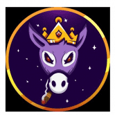 DonkSwap Donkey King Finance 成立于 2021 年 4 月，正值加密地毯拉动时代。目标是创建一个安全的地方来投资币安智能链（BSC）项目，同时开发一个受益于该生态系统的前进项目生
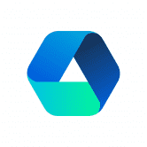 Dopple Finance Dopple 是稳定币 DEX，专为在币安智能链上高效交换稳定币而设计。 Dopple 的原生代币 DOPX 用于铸造 Dopple 的分数算法稳定币 KUSD。可用的稳定币池：KUSD、BUS
GameX Swap GameX Swap 如何与新生态系统协同工作？ GameX Swap 是一个去中心化交易所，已经创建了一个新的生态系统，另一种代币 XGameX 将成为这个新生态系统的新焦点。 在 GameX Swap 中，您可
Lizard 由 Oasis 提供支持的 Oasis Emerald Paratime 和以太坊资产的社区驱动去中心化交易所，具有快速结算、低交易费用和民主分配的特点。 Lizard 为您带来最佳的交易机会，让您找到并最大
Loopring Exchange Loopring 是一种使用 zkRollup 在以太坊上构建高性能、非托管、订单簿交换的协议。 介绍 Loopring DAO 投票！💙 社区将选择他们想用路印协议费用激励哪些流动性提供者 通过在 L2 上与
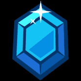 Lootswap LootSwap 是 Harmony 网络上的幻想游戏主题 DEX 一些骗子创建了一个假的 ONEFI 令牌。这是一个骗局。在任何情况下都不要购买。 OneFi 的官方代币尚未推出。一旦完成，我们将分享真
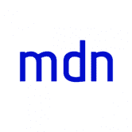 Madison Finance Madison Finance 是一种金融协议，在麦迪逊自动做市商 (AMM) 的支持下改进了无需许可的交易，使用户能够快速、无国界地跨各种链进行交易操作。 Madison Finance 是托管在 Smart Chain 网络上的
DeFi Plaza DeFi Plaza 是一家低成本交易所，为 120 对交易量最大的 DeFi 代币提供一流的兑换成本。 高度集成的设计使所有 120 个交易对的 Gas 成本最低，且交易所费用低至 0.1%。 尽
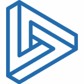 Deri Protocol 德里，你的选择，你的未来！ Deri 协议是交易衍生品的 DeFi 方式：对冲、投机、套利，一切都在链上。使用 Deri 协议，交易在 AMM 范式下执行，头寸被标记为 NFT，可
DeversiFi DeversiFi 唯一的高速去中心化交易所，交易者可以直接从其私人钱包的安全性中执行任何规模的订单。到 2020 年 3 月成为第一个由 StarkWare 提供支持的交易所。使用 Dever
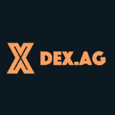 DEX.AG DEX.AG 是一个 DEX 聚合器，它搜索 11 种不同的 DEX，为您的交易提供最优惠的价格。它可以免费使用，适合移动设备使用，并且有多种可用的代币。 DEX.AG 的 X Blaster 功能将
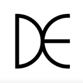 DEXEOS DEXEOS 是世界上第一个基于 EOS 的去中心化交易所，于 8 月 1 日推出。 DEXEOS的创始成员来自瑞典、韩国、中国、美国和挪威。 DEXEOS 致力于为每个人提供一个易于
DexGuard DexGuard 是一种 bloXroute 产品，为 Uniswap 和 Sushiswap 上的交易提供可靠且价格合理的前置保护。 您通过 DEX 提交的每笔交易都容易受到抢先攻击和三明治攻击——尽管交易规模越大，遭受
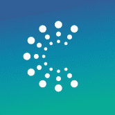 Dexter Dexter 是 Tezos 区块链上的去中心化、非托管交易所，使用户能够将他们的 XTZ（Tezos 的本地货币）与基于 Tezos FA1.2 代币标准构建的其他代币进行交换。 Dexter 还允许任
dForce Trade dForce Trade 是 dForce Network 推出的去中心化交易平台，用于促进大多数采用 ERC-20 标准的稳定币的即时交换，价格滑点为 0%，包括 USDx、HUSD、BUSD、USDT、U
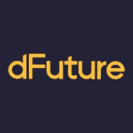 dFuture dFuture 是一种基于外部报价和动态交易费用的衍生品交易协议，使用 QCAMM（Quoted Price and Constant Sum Based Automated Market Maker）。 dFuture 的核心设计是零无常损耗和零滑点
Dfyn Network Dfyn 是目前在 Polygon 网络上运行的多链 AMM DEX。各种链上的 Dfyn 节点充当由路由器协议启用的跨链流动性超级网格的流动性入口和出口点。 跨链桥梁是生态系统增长的
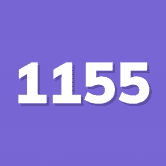 ERC1155<->ERC20<->ETH bridge 以两种方式（锁定或回绕）在 ETH、ERC-1155 和 ERC-20 之间进行双向转换。所以 2x2+1=5 种转换方式。不收费。 将任何 ERC1155 包装在 ERC20 中，反之亦然 使用高级智能钱
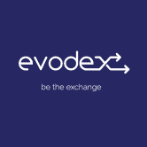 evodex Evodex 是两个区块生产者对 EOS DE-FI 生态系统的共同贡献。 智能合约由 EOS Argentina 创建，它允许任何人在去中心化交易所启动并与持续流动性池进行交互。前端和 Web 界面由 EOS Costa
Excalibur Exchange Excalibur Exchange 是一个基于 Fantom 的 DEX，专注于可持续性、资本效率和支持新项目。可持续性一直是 DeFi 领域的一个问题，因为资本遵循激励措施，需要适当配置激励措施以
ComethSwap ComethSwap 是一个开放的 DEX，任何人都可以在其中列出 ERC20 兼容对。 为了吸引 Comethswap 的流动性，将激励特定的 DeFi 相关池。 流动性提供者将在没有归属的情况下分配必须⚗️
Crodex Crodex 是一个去中心化交易所 (DEX)，提供流动性并支持 Cronos 上的点对点交易。 我们开始吧：CRX Metaverse Hub 2.0 — 在 CROWD Launchpad 上的初始代币销售和启动Metaverse
dDEXX dDEXX 是一个基于自动做市商 (AMM) 的去中心化交易所 (DEX)，拥有可盈利的 DeFi Yield Farms、矿池等。" dDEXX 是一个基于自动做市商 (AMM) 的去中心化交易所
Beamswap Beamswap 是在 Moonbeam 链上具有自动做市商的去中心化交易所。 借助 Yield Farming / Bridge / Faucet Service / Launchpad / Syrup Pools 等各种其他功能， 对于在 Moonbeam Chain 上寻找 Defi 的每个人来说，都有一些
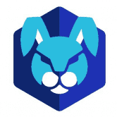 Chronoswap Chronoswap 是 Cronos 区块链上第一个专注于提供一流交易体验的去中心化交易所 (DEX)。 为您的资产提供真正的效用。 重新控制您的代币并释放其全部潜力 通货紧缩机制
CTV DEX Aggregator CTV DEX Aggregator 是一个专业的 DeFi 仪表板，将最流行的 DeFi 协议和区块链聚合在一个 dapp 中。 CTV DEX Aggregator 创建了一个对有经验的用户和新手都很有用的一体化解决方案。 CTV DEX 聚合器
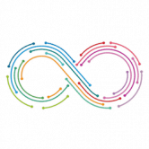 D8X Exchange D8X 是一个基于以太坊智能合约的交易平台。完全去中心化，不依赖第三方服务，允许个人之间直接交易。随意控制您的资产和管理您的资金。 D8X EXCHANGE 是一个加密资
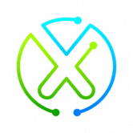 DAppDEX 使用 STO 代币的 DApp 去中心化交易所。 欢迎来到 DAppDEX！用于交易 ERC-20 代币的去中心化交易所。直接与其他同行互动，独立经营您的业务，选择您自己的交易
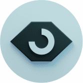 Bogged Bogged Finance 是一个 dApp，其中包含一组工具，使用户可以轻松地在多个链上交易代币。 我们允许用户查看实时图表、钱包数据和配对信息。 我们还提供创新的 DEX 聚
BenSwap BenSwap 是 Ben Token 生态系统的一部分，目的明确： 我们希望成为狗币、动物币和 meme 币的最佳 DEX 和孵化器。 我们如何做到这一点？ 我们从治理代币 Golden Ben (GBEN) 的收益耕作开始。
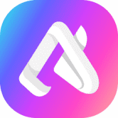 AuraSwap 什么是 AuraSwap？ 为什么选择 AuraSwap？ $AURA 是什么 AuraSwap 是多边形链上的 AMM 去中心化交易所和收益农业，gas 费用接近于零。 $AURA 的核心是生态系
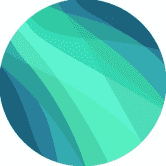 AuroraSwap AuroraSwap 的设计基于 Uniswap 恒积自动做市商 (AMM)。 在 AMM 中，流动性提供者只需存入一对代币，算法就会自动为这对代币做市。 交易者可以轻松地在 AMM 中的代币之间进
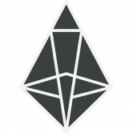 Alcor.exchange EOS 链上，灵活，免费上市，去中心化交易所，用于基于 eosio 的代币。 一键创建市场，随心所欲地交易。 忘记任何监管。 完全不收费。 Alcor.exchang


 算法提供支持的去中心化交易平台。")


 的去中心化交易所 (DEX)，拥有可盈利的 DeFi Yield Farms、矿池等")